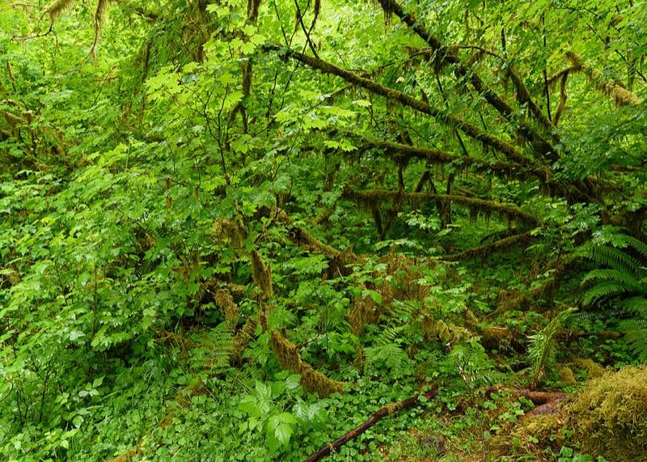
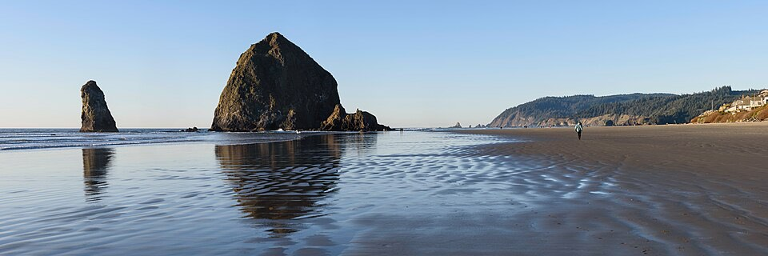
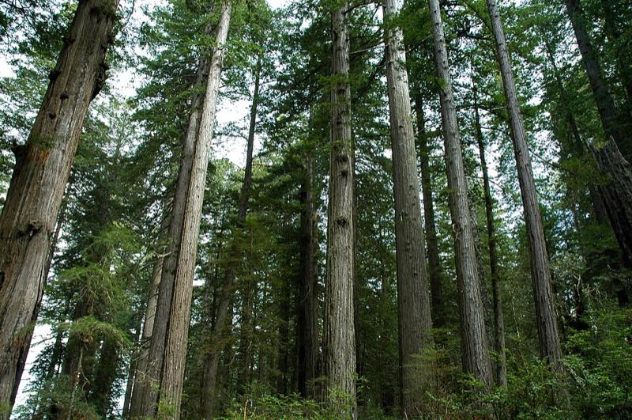
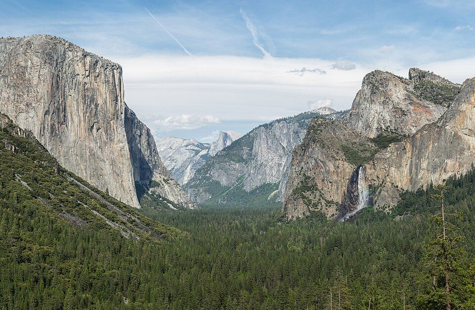
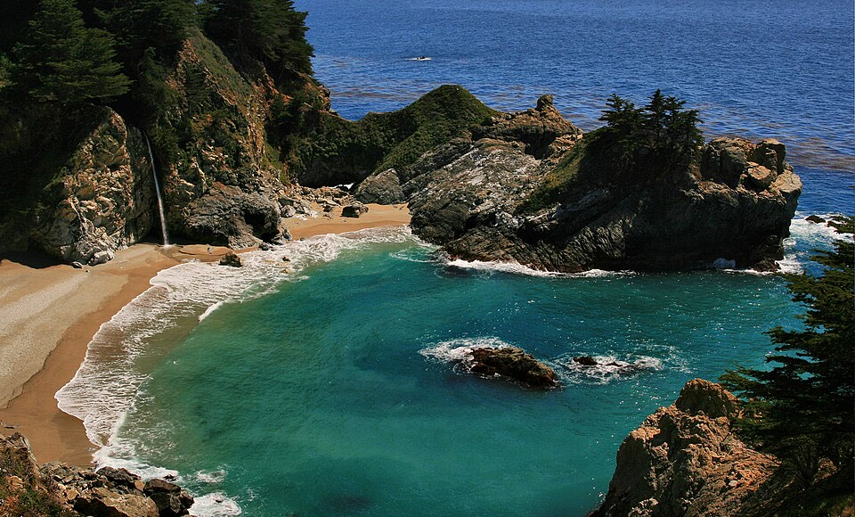

Più di duemila chilometri di costa, tutti diversi: la foresta pluviale, le spiagge selvagge dell’Oregon, i giganti della California del nord, una valle di granito e la strada più bella d’America.

Olympic
Tre metri e mezzo di pioggia l’anno
Una delle poche foreste pluviali temperate del mondo: aceri e abeti coperti di muschio, felci alte come una persona, e a mezz’ora di strada il Pacifico con i faraglioni e i tronchi bianchi portati dalle mareggiate.
Da non perdere: la Hall of Mosses, Rialto Beach con la bassa marea, Ruby Beach.

Costa dell’Oregon
Tutta pubblica, 584 km di spiaggia
Per legge ogni metro di spiaggia dell’Oregon è di tutti. Scogli enormi in mezzo alla sabbia, fari dell’Ottocento, dune alte come palazzi e balene grigie che passano l’estate vicino alla riva.
Da non perdere: Haystack Rock, le balene di Depoe Bay, il faro di Heceta Head.

Redwood
Gli alberi più alti del pianeta
Le sequoie costiere superano i cento metri e vivono duemila anni. Camminarci in mezzo è come stare in una cattedrale: luce verde, silenzio, e i wapiti che pascolano sui prati lungo la strada.
Da non perdere: Lady Bird Johnson Grove, Stout Grove, l’Avenue of the Giants.

Yosemite
Mille metri di granito a strapiombo
Una valle scavata dai ghiacciai, chiusa da El Capitan e Half Dome, con cascate che cadono dal bordo. Sopra, Glacier Point; a sud, le sequoie giganti del Mariposa Grove, gli alberi più grossi del mondo.
Da non perdere: Tunnel View, Glacier Point al tramonto, il Grizzly Giant.

Big Sur
150 km di Highway 1 sul Pacifico
La strada corre a mezza costa sulle scogliere, tra ponti di cemento sospesi sulle gole e baie turchesi. Niente città, pochissimi distributori, e una cascata che cade dritta sulla sabbia.
Da non perdere: il Bixby Bridge, McWay Falls, gli elefanti marini di Piedras Blancas.